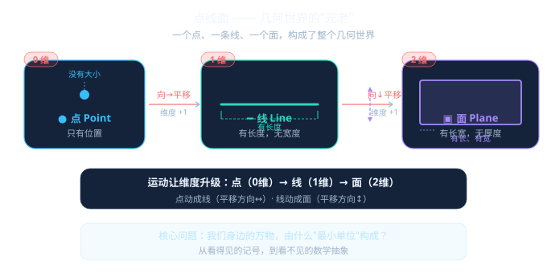

笔尖按下去是一个点，拉直的绳子是一条线，桌面是一片面——几何世界从这三个"元老"开始

先选一个你关心的问题，后面的互动和 AI 学伴都会围绕它来展开。
选择或输入后，本课会围绕你的问题展开。
先试试看，错了也没关系，学完你就知道了！
用你的食指尖按一下桌面——那个接触的地方，就是一个点。
在纸上画一个圆点，写上字母 A。这就是点 A。
点击画布任意位置，画一个点。用你最细的笔尖还能画出更小的点吗？数学里的点——想多小就多小
下面这个实验是今天的核心发现。拖动蓝色的点向右滑——
💡 你也可以在画布上直接拖拽蓝色的点！
它们都是"线"，但"端点"不一样——
拖动下面三个彩色的点，看看什么情况下它们能确定一个平面，什么情况下不能。
💡 在 GeoGebra 中画三个点：用"点"工具点三下。试着把三个点排成一条直线——你会发现什么？
你有直尺吗？把直尺的侧边紧贴桌面，横着滑过去——直尺侧边扫过的地方，就是一个面。
点击下面的物品，判断它是点、线还是面的实例。
下面这些说法对吗？对着你的理解来打个勾！
如果一直放大一个点——放大100倍、1000倍、10000倍——它还是点吗？
现实中任何东西放大后都有"大小"。数学的点是一种理想化——就像物理学里的"质点"。
维度是怎么"长"出来的？
平移一次，维度 +1。点→线→面→体——运动是维度的"制造机"。
线就是无数个点的集合？
是的。一条线段上的点多到数不清——这就是"连续"的概念，为以后学实数轴埋下伏笔。
两个点、三个点……分别能确定什么？
2点→线 | 3点不共线→面 | 4点不共面→体。点数越多，能确定的结构越高维。
点线面在哪些地方用到？
GPS定位（点）、导航路线（线）、地图（面）——你手机里的地图App背后就是点线面！
1. 在纸上画两个点 A 和 B，过它们画一条直线。换个方向再试试——能画出第二条吗？
2. 说出教室里 3 个"点"的实例、3 个"线"的实例、3 个"面"的实例。
3. 画一条线段，量出它的长度。再画一条从同一端点出发的射线。
1. 用 4 个点放在纸上（任意位置），过每两个点画直线——最多能画出几条？
2. 如果三个点共线了，它们能确定一个平面吗？为什么？
3. 画一条线段 AB，再画它的中点 C。点 C 把线段分成了什么关系？
1. 空间中的 4 个点，任意三点不共线，它们最多能确定几个平面？（提示：想想三棱锥）
2. 一张纸可以看作一个平面的一部分。把它对折——折痕是什么？折痕把平面分成了什么？
3. 挑战：只用直尺和铅笔，在纸上画出三条两两相交但不共点的直线——它们能确定几个平面？
"我画的点不就是点吗？" — 不，你画的是记号。真正的点没有大小，你想画多小都行，但永远画不到"零大小"。
"线段的端点也是线段的一部分吗？" — 是的，端点属于线段！但射线只有一个端点，直线没有端点。
"平面就是这张纸的大小吧？" — 不对。平面向四面八方无限延伸，纸只是它的一小片。就像直线可以无限延长一样。
线段有 2 个端点（可测量）、射线有 1 个端点（向一方无限）、直线有 0 个端点（向两方无限）。"直线 AB"和"线段 AB"写法一样但东西完全不同——靠上下文区分！
学完了再来试试！
本节点的前置、后续和同域知识由标准知识图谱模块自动渲染。